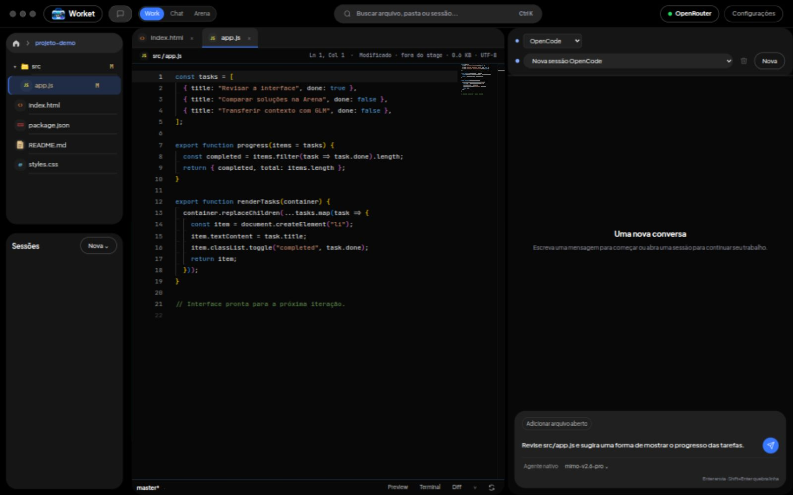

Hermes
Seu próprio processo, sessões, ferramentas, credenciais, permissões, memória e compactação. A conversa acontece no harness nativo do Hermes.
Editor Monaco, múltiplos agentes, terminal PTY, Git visual com checkpoints e transplante inteligente de contexto num único espaço de trabalho de alta performance. Hermes e OpenCode em harnesses nativos separados, cada um com suas sessões, ferramentas, permissões e memória.
O Worket reúne a interface de trabalho. Hermes e OpenCode continuam sendo ambientes de execução independentes.
Seu próprio processo, sessões, ferramentas, credenciais, permissões, memória e compactação. A conversa acontece no harness nativo do Hermes.
Outro harness, com seu próprio processo e histórico. Na Arena, cada painel conversa com o agente correspondente; os contextos não são fundidos automaticamente.
Quando você decide transferir uma tarefa, o GLM compila o objetivo, as decisões técnicas, os arquivos relevantes e o próximo passo em um dossiê estruturado. O Worket valida esse dossiê, lê os arquivos essenciais atuais do disco e abre um novo chat nativo no destino.
O handoff é uma transferência explícita de contexto entre sessões independentes. O GLM atua como compilador dessa passagem; a execução da tarefa continua no harness escolhido. O uso direto do OpenRouter também atende à geração de mensagens de commit.
Escolha um tema e explore a interface atual do Worket 0.3.1.
Árvore de arquivos com badges Git, Monaco Editor com abas dedicadas e conversa do agente lado a lado.

Tema 2 · Solid — Worket 0.3.1
Capturas da interface atual em um projeto de demonstração, sem histórico pessoal. As mensagens no compositor são rascunhos; nenhuma inferência foi executada para estas imagens.
Fontes JetBrains Mono, Monaco Diff em tempo real contra Git HEAD e atalhos customizados.
Atalho Ctrl+Shift+L anexa linhas selecionadas ao chat com notação @arquivo:L1-L20.
Painéis ajustáveis por arraste ou teclado com persistência da geometria salva no host.
As ferramentas do projeto ficam no mesmo espaço em que você conversa com os agentes.
Monaco com abas, diff e seleção de código para o chat. O Explorer mostra os arquivos e as sessões; o preview mantém a interface que você está construindo por perto.
Revise alterações, prepare commits e acompanhe checkpoints. Execute os comandos do projeto em terminais PTY sem sair do workspace.
Dois temas para o mesmo fluxo de trabalho. Original oferece variações de cor; Solid traz superfícies escuras e painéis arredondados. A escolha fica salva no aplicativo.